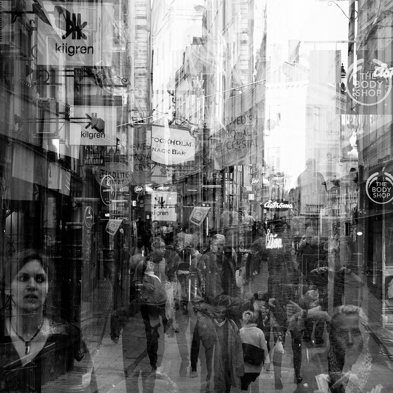

|
R. Becket Ebitz |
Research Associate
|
| home | about me | research | publications | code |
|
Our brains are profoundly flexible. What we decide to do at any given moment is not a deterministic consequence of our circumstances - instead our goals, expectations, even our level of arousal can shape how we process sensory information and make decisions. My ultimate goalis to understand how different internal states remap how sensation is transformed into action. I'm also interested in how we adjust our internal states in order to change our behavior. These are expansive goals, but I have made some progress by starting with one particularly tractable question: "In Between Days," flickr user Peter Tandlund how do we control what we look at?The world is constantly swarming with things that we could be looking at. Decades of neurobiological study have taught us a lot about how we resolve this conflict in order to choose a single eye movement. But - how do we maintain stable oculomotor priorities over longer time scales? How do we adjust these priorities when our goals or environmental demands change?My major line of researchexamines how we direct our eyes while we're in different goal states. It turns out that we can generate the same eye movement responses in very different ways, depending on our internal state. In fact, there are huge changes in the dynamics of the prefrontal cortex across different goal states that may have implications for understanding behavioral flexibility more generally.I've also been working on understanding the fundamental motifs that the prefrontal cortex uses to control sensorimotor transformations (e.g.), how arousal changes our attentional priorities (e.g.), and how we adjust arousal in order to change attentional priorities in ourselves (e.g.) and others (e.g.). Methodologically, I develop behavioral paradigms that encourage transitions between different internal states while monkeys and humans look at things. Whenever possible, I try to identify internal states from first principles: through discovering and making sense of the latent structure in behavior. I use crowd-sourced psychophysics to rapidly prototype new paradigms and to develop models. In the lab, I probe the mechanisms underlying internal states through i) population electrophysiology, ii) electrical microstimulation, and iii) pharmacological challenge. My work enthusiastically incorporates tools, approaches, and insight from other disciplines, especially artificial intelligence (how would we build agents that can do X?) and ethology (how does X function as a part of species-typical behavior?). |
|
|